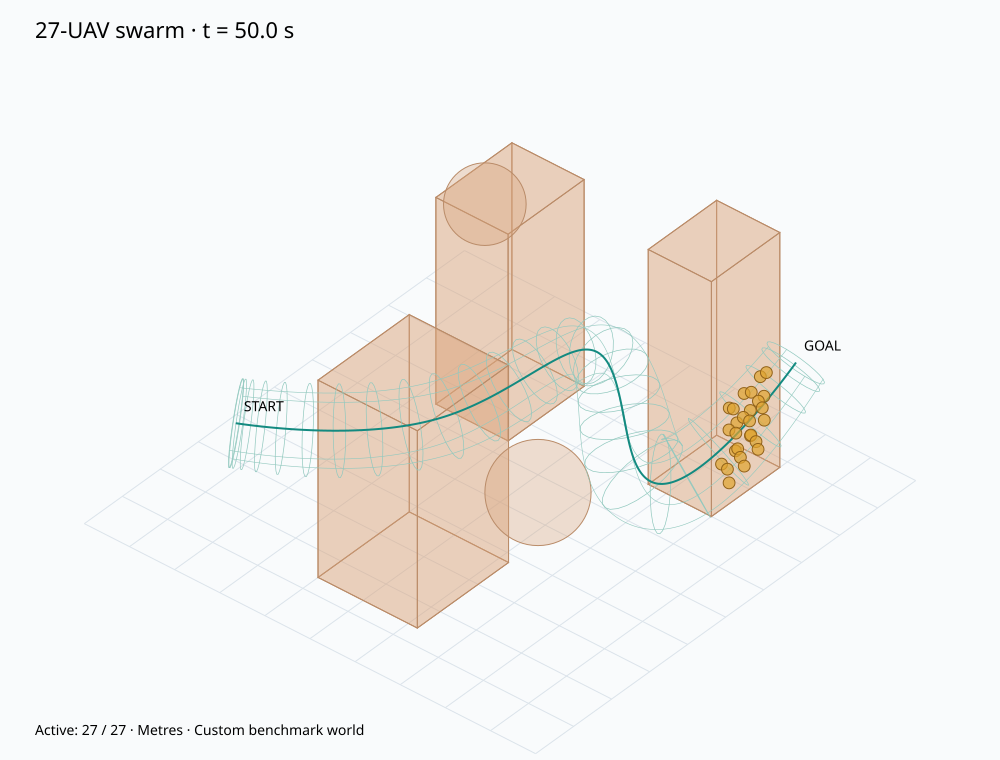
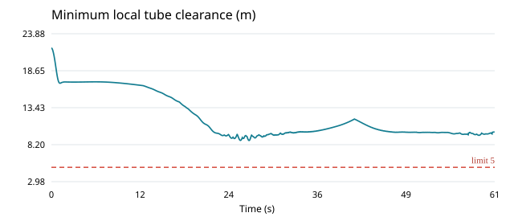
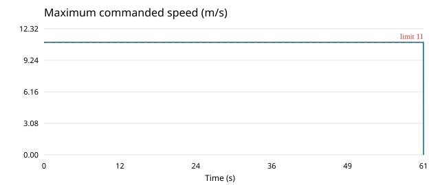

27 UAV · benchmark tự dựng · Enhanced vector field / actor–critic / LDO; tube cố định.
Mở hoạt ảnh 3D · Xem tube · Dữ liệu CSV · Cấu hình · Kết quả JSON
Hoàn thành: 27/27. Số liệu là kết quả trên bản đồ tự dựng, không phải tái tạo chính xác Hình 8. Ngưỡng đỏ thể hiện giới hạn trong cấu hình. Vi phạm vận tốc thực vẫn được báo cáo dù lệnh vận tốc đã bão hòa.



| completed | 27 |
| total | 27 |
| finish_time | 60.62420061710494 |
| min_pair_distance | 11.99999999999999 |
| max_pair_distance | 100.33112828344606 |
| min_boundary_clearance | 8.795584709349697 |
| min_obstacle_clearance | 22.400441765112046 |
| max_speed | 12.522877635843624 |
| max_command_speed | 11.000000000000004 |
| max_input | 29.585605792641232 |
| violation_steps | {'pair_safety': 0, 'boundary_safety': 0, 'cohesion': 0, 'actual_speed': 2488, 'obstacle_safety': 0, 'input_saturation': 0, 'command_speed': 0} |
| violation_duration_estimates | {'pair_safety': 0.0, 'boundary_safety': 0.0, 'cohesion': 0.0, 'actual_speed': 49.76, 'obstacle_safety': 0.0, 'input_saturation': 0.0, 'command_speed': 0.0} |
| constraints_passed | False |
| all_completed | True |
| error | None |
| simulated_until | 60.64 |
| integration | explicit midpoint inner dynamics; outer command zero-order hold |
| wall_seconds | 23.816059193999536 |
| dt | 0.02 |
| success | False |
Active UAVs only; completed UAVs exit through terminal disk and leave the domain. Metrics sampled each dt, not a continuous-time guarantee.
Định nghĩa biên tube dùng khoảng cách hướng kính cục bộ; đây không phải SDF chính xác của toàn bộ bề mặt cong. Xem docs/PAPER_VB_IMPLEMENTATION.md để biết các giả định và giới hạn.